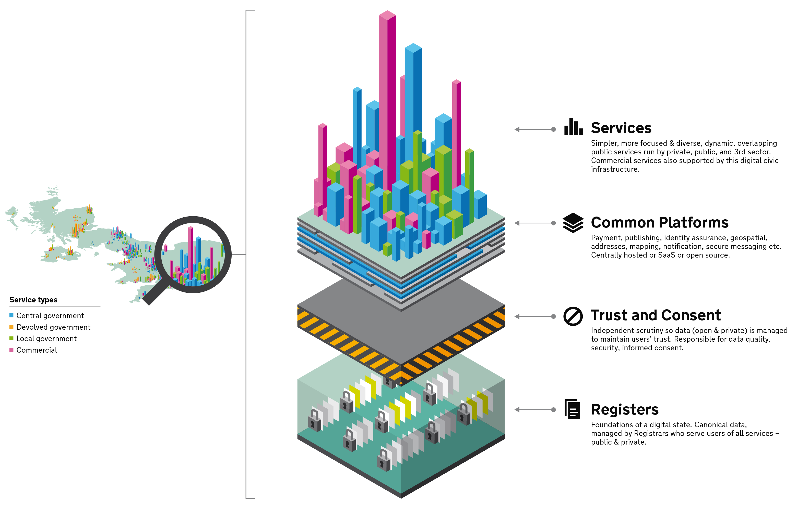
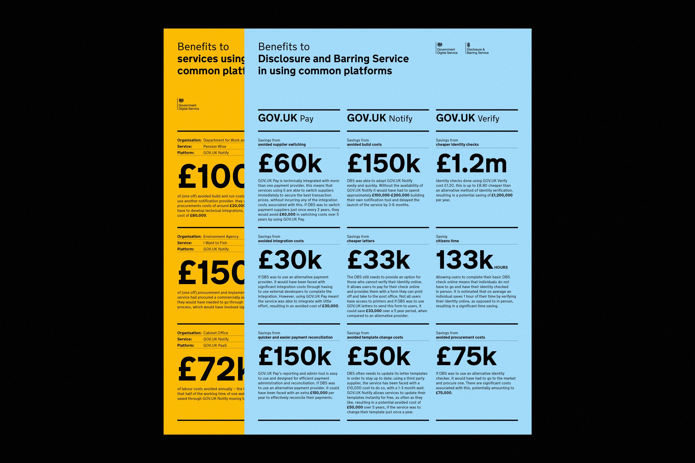

Government as a Platform— VISIT THE GAAP BLOG

Some of the platforms we developed
A common platform approach
After an extensive period of research with service teams across government it became clear repetition was often occurring in service delivery. Government was waisting time and money working in silos and building the same things time and time again.
We examined the most prominent commonalities across government services and realised we could create a set of common platforms that would make user-centred public services easier to create and cheaper to run.
Informing the future service landscape
As well as identifying what common platforms made the most sense to build, we also did some bigger picture work framing how these platforms could help support a more dynamic service landscape in the public sector. One that was built on structured data foundations and wasn't tied to old legacy IT.
Sketching the vision for common platforms and where they fit within a more dynamic future service landscape
Creating a series of start-up teams
We prioritised the areas where this common platform approach would benefit government most and began setting up agile product teams to test the viability of delivering these common platforms. Some of the platforms we looked to create included a notifications platform, a payments platform, a hosting platform, a web chat platform, a structured data platform and a form-builder platform.
I lead design across the platforms, working at a micro and macro level with the multidisciplinary delivery teams. I helped guide the strategic vision while also getting stuck into the nuts and bolts of delivering the platforms based on user needs.
The GOV.UK Notify multidisciplinary team
Focusing on adoption
We realised early on that ease of adoption was key to service teams using our platforms. We invested a lot of time researching potential blockers to adoption across the platforms and prioritised features based on user needs.
These common platforms are now used by nearly a thousand services around government. They save tax-payer money and offer a better experience for users. They also save the teams building government services a lot of time, allowing them to focus on the problems bespoke to their service.
Identifying and promoting the benefits
Marketing posters for various GaaP platforms